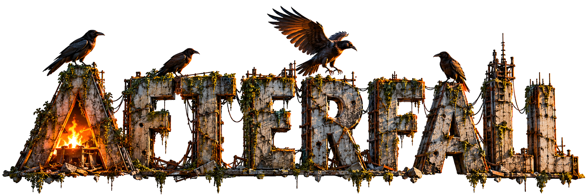

AfterFall
Strategy game prototype centered on territory, resources, infrastructure, and diplomacy.

Interactive Project / Strategy Game
In Development
AfterFall is a strategy game prototype in development.
The world of AfterFall
Territory matters, but controlling land is only part of the challenge. Resources must be secured, infrastructure developed, and relationships managed. Expansion can create opportunity, but it also creates new vulnerabilities.
The game is being designed around interconnected strategic systems:
- Territory: Establish control, expand influence, and manage the challenges of holding what you've gained.
- Resources: Balance scarcity, production, and competing priorities.
- Infrastructure: Develop the systems needed to support a growing population and maintain stability.
- Diplomacy: Navigate alliances, rivalries, negotiations, and conflicting interests.
- Consequences: Make decisions whose effects reach beyond the immediate turn.
Development
AfterFall is an evolving game project, with its core direction centered on strategic depth and meaningful choices.
Rather than treating resources, diplomacy, and expansion as separate mechanics, the long-term goal is to make them influence one another. A decision that strengthens one part of a developing society may weaken another.
The central question isn't simply how much territory you can take.
It's what you can build, what you can hold, and what you're willing to sacrifice along the way.
Status: In development.
Back to Arcade